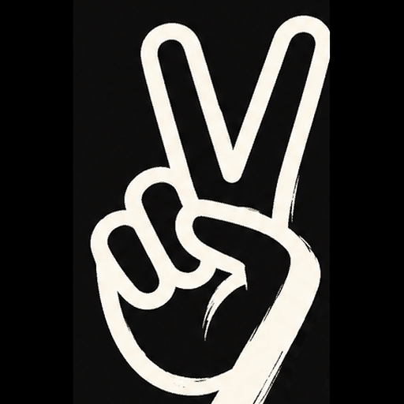
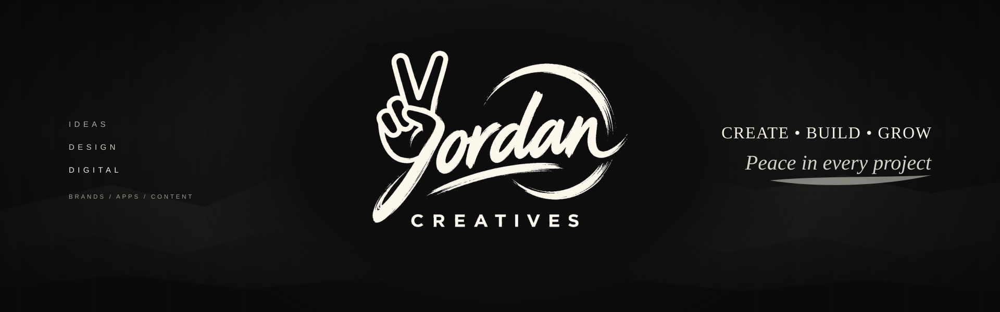

Yordan Creatives — identity
Peace in every project.
One studio, two kinds of work: building things on site, and building software at a desk. The identity is a near-black and bone two-tone system with a single hand-drawn mark. This page is the reference sheet for it — it is not linked from the site navigation yet, and it is written so it can be read without any of the original design files.
01 — The mark
A hand-drawn brush script: the peace-hand forms the first letter, two fingers making the V, the wrist sweeping on into the word. A brush underline grounds it and a loose circular swash closes it; CREATIVES sits beneath in wide-tracked capitals.

The script is artwork, not a typeface. Those letters exist only as pixels inside the owner's PNG — there is no font file, no webfont is loaded anywhere on this site, and nothing here sets the wordmark in type. Where a script-like line is needed in running copy, the site uses Georgia italic and says so; it is an honest approximation, never a stand-in for the mark.
The artwork is not transparent. It was drawn on near-black #0F0D0D, and that
background is kept. When the mark has to sit on white, wrap it in .brand-plate so the black
reads as a deliberate panel instead of a stray rectangle. No cut-out version has been faked.
02 — Palette
Six flat colours. The sunset oranges on the identity board are photographic, not brand colours — they are not tokens. Ratios are WCAG 2.1 contrast, measured on the pair named in each card.
Near-black · --dark
The ground. Dark sections, banners, the plate behind the mark.
17.28 : 1 bone text on it
Charcoal · --charcoal
Second dark. Texture, panels, quiet bands inside dark layouts.
11.29 : 1 bone text on it
Artwork black · --art-black
Not a design choice but a fact: the black the mark was drawn on.
16.91 : 1 bone text on it
Stone · --stone
Quiet warm light: rules on dark, captions, secondary text.
14.88 : 1 ink text on it
Bone · --bone
The mark's own ink and all type on dark. Warm, never cream-paper.
17.17 : 1 ink text on it
Paper · --paper
Light pages stay white. Bone is a surface for brief moments, not a page colour.
19.67 : 1 ink text on it
Working greys and the one action colour come from the existing site, unchanged:
--muted #5a5a62 (6.83 : 1 on paper), --rule #e2e2e6,
--accent #1f3ae0 (7.66 : 1 on paper, and 7.66 : 1 for paper on it).
Every step below 14 : 1 is still far past the 4.5 : 1 AA threshold; nothing here relies on
low-contrast grey for body copy.
03 — Banners
Two wide compositions built as single offline SVG files: no photograph, no external font, no network request. The atmosphere is gradients plus a low angular ridge, and the mark is the owner's PNG embedded in the file.
banner.svg · 1600 × 500 · sociallogo centred · services left · Create / Build / Grow right
hero-banner.svg · 1920 × 600 · herothree-part: services · mark · promiseobject-fit:coverthe mark and ridge stay inside the centre safe zone
Both files carry an internal @media (max-width: 760px) rule: below that width the side
columns switch off and the mark takes the full height, so a 390 px phone gets a clean centred mark
instead of three columns of unreadable 6 px type. The preview harness at
assets/brand/preview.html renders every variant, including the 390 px crops.
04 — Copy
Short, declarative, no adjectives doing work that the pictures should do. The three service words and the three promise words are the fixed set; the tagline stays in the italic approximation, never in the brush script.
Services — slashes
IdeasDesignDigital
BrandsAppsContent
Services — stacked
IdeasDesignDigital
Promise — dots
CreateBuildGrow
@yordancreatives
On near-black
CreateBuildGrow
Peace in every project
05 — Do & don't
Short list, enforced by what the assets can actually do — not by taste alone.
Do
- Keep the mark big and uncrowded: 600 px wide in a header, no smaller than ~90 px before it stops reading.
- Use bone on near-black, or ink on white. Those two pairs are 17 : 1 and 19 : 1.
- Let the black around the mark be deliberate: a plate on white, full bleed on dark.
- Set the supporting words in the site's sans with wide tracking, so the brush script stays the only handwriting.
- Say "approximation" when Georgia italic stands in for the script. It is not the mark.
Don't
- Recolour the artwork, invert it, or trace it into a "font".
- Put it on cream or beige — bone as a page background was vetoed, and a warm field fights the brush.
- Drop the opaque PNG on a gradient without a plate or matte; the rectangle shows.
- Stretch or squash it: the lockup is 600 × 428 and holds that ratio.
- Add a second script face or a display font. There are no webfonts on this site, by design.